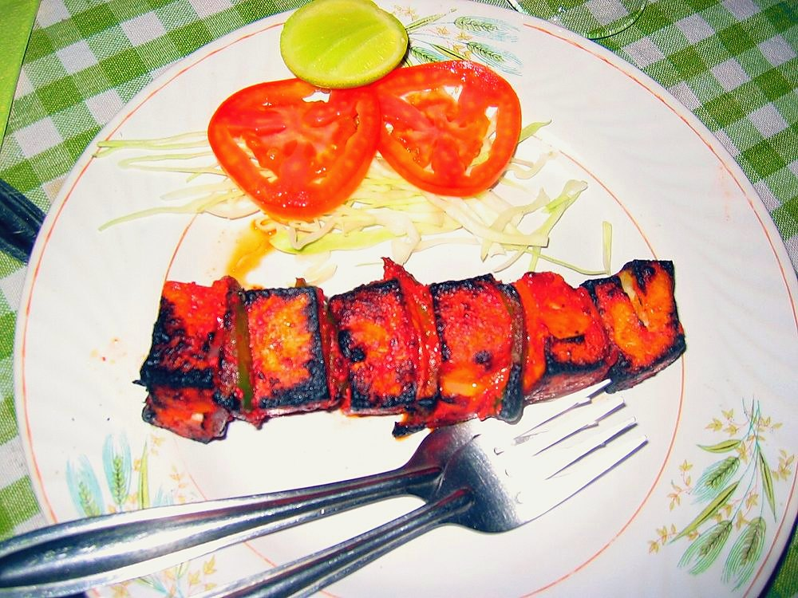

Paneer Tikka
charred cubes of paneer and capsicum off a skewer, smoky and sharp with chaat masala

Contains: milk, mustard
Checked against the ingredient list for ten allergens: milk, egg, fish, crustaceans, tree nuts, peanuts, sesame, mustard, soy and gluten. Brands vary, so read the label on anything new to you.
Ingredients
Quantities for 4.
- 400g, cut into 3cm cubes Paneer
- 150g, thick and hung 30 minutes Yogurt
- 2 tbsp, dry-roasted until it smells nutty Besanstops the marinade sliding off
- 1 large, cut into 3cm squares Capsicum
- 1 large, quartered and separated into petals Onion
- 1.5 inch, made into a paste with the garlic Ginger
- 6 cloves Garlic
- 1.5 tbsp Kashmiri Chilli
- 1 tsp Garam Masala
- 1 tbsp, crushed Kasuri Methi
- 1 tsp, to finish Chaat Masala
- 2 tbsp, heated and cooled Mustard Oilor neutral oil
- 1, in wedges Lemon
- 1 tsp Salt
Cookware
oven, stovetop
Before you start
- Hang the yogurt in a muslin for 30 minutes. Watery yogurt slides off the paneer and pools in the tray.
- Soak wooden skewers in water for 20 minutes so they do not scorch.
- Marinate 1 to 4 hours in the fridge. Overnight makes paneer chalky, not better.
Method
- Dry-roast the besan in a small pan on low for 3 minutes until it smells like toasted nuts, then cool.Raw besan tastes bitter and pasty. Three minutes fixes it.
- Whisk the hung yogurt with the roasted besan, ginger-garlic paste, kashmiri chilli, garam masala, crushed kasuri methi, oil and salt into a thick paste.
- Fold in the paneer, capsicum and onion petals, coating everything evenly, and refrigerate 1 hour.Fold, do not stir hard. Paneer cubes break easily once marinated.
- Heat the oven to 230C with a rack in the upper third.
- Thread the paneer and vegetables alternately onto skewers, leaving a small gap between pieces.Pieces pressed together steam instead of charring.
- Set the skewers on a wire rack over a foil-lined tray and roast 12 minutes.
- Turn the skewers and roast another 6 to 8 minutes, until the edges are blackened in patches and the marinade has set dry.
- Rest 3 minutes, then dust with chaat masala and squeeze over lemon.
- Serve hot with sliced onion and mint chutney.
Storage
Best straight from the oven. Keeps 2 days refrigerated; reheat 6 minutes in a 220C oven. Do not freeze, paneer turns crumbly.
Nutrition Good estimate
High protein: 23 g a serving, 20% of the calories
| Per serving244 g | Per 100 g | |
|---|---|---|
| Calories | 462 kcal | 190 kcal |
| Protein | 23.3 g | 10 g |
| Carbohydrate | 19.6 g | 8 g |
| of which sugars | 7.8 g | 3 g |
| Fibre | 4.3 g | 2 g |
| Fat | 33.3 g | 14 g |
| of which saturated | 14.7 g | 6 g |
| of which unsaturated | 13.8 g | 6 g |
Nearest database match used for chaat masala, garam masala. Estimated from raw ingredients using USDA FoodData Central.
Written and checked against sources, not cooked in a test kitchen. Times, yields, allergens and nutrition are worked out rather than measured, so use your own judgement on doneness and on storing. More in About.